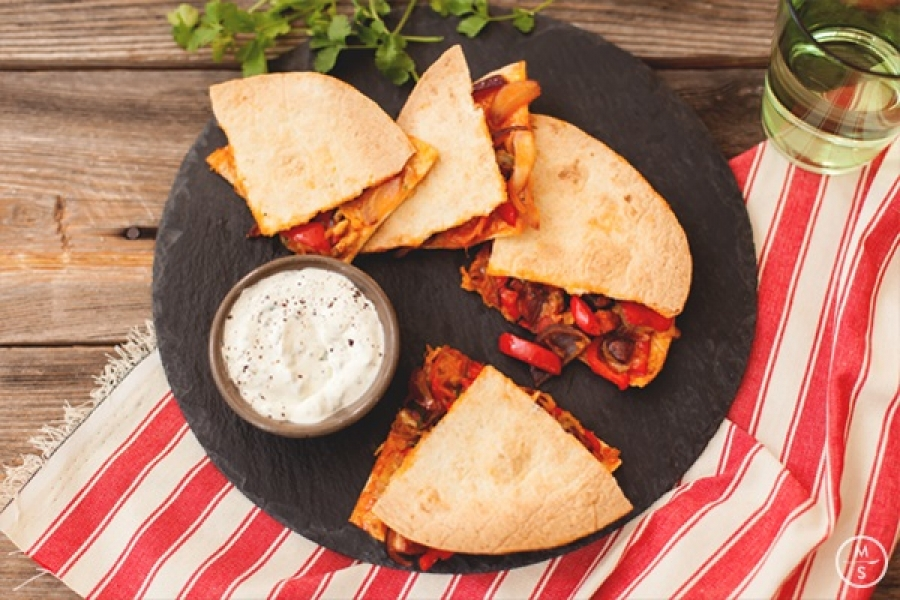

All about my favorite dishes
The dishes are healty and delicious
Perfect party-eten en nog beter met mooi weer: deze quesadilla's! Het is een echte klassieker uit de Mexicaanse keuken, en in dit gerecht maak je ze met paprika, tomaat, chorizo en heerlijke zacht gesmolten kaas. De frisse korianderdip zorgt voor een perfecte balans. Mocht je de hoeveelheid gluten in je maaltijden wil beperken: quesedilla's zijn glutenvrij. Buen provecho!
Ingredients for quesadilla
- 200 g room
- 2 st chorizo worstjes
- 240 g tortilla's
- 1 st rode ui
- 1 st rode paprika
- 1 st verse rode chillipeper
- 150 g Goudse kaas
- 100 g cherrytomaten
- 10 g verse koriander
- 1 st limoen
How to make the quesadilla?
- Chorizo snijden
- Groenten voorbereiden
- Vulling voorbereiden
- Quesadillas bereiden
- Dip bereiden
- Serveren